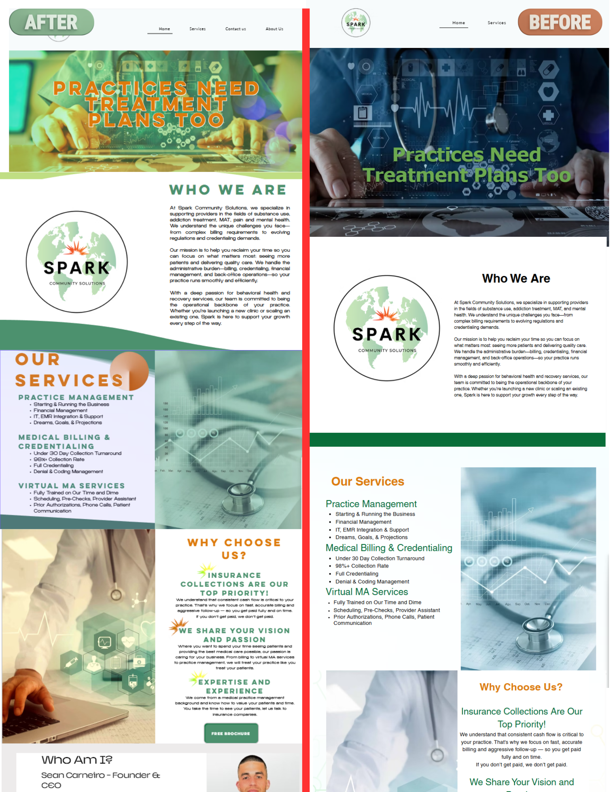
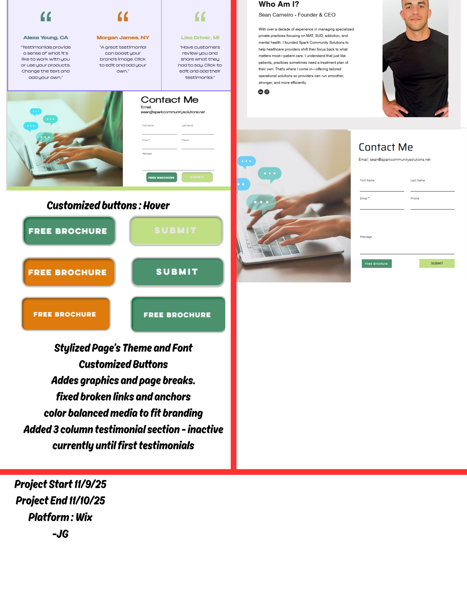

Spark Community Solutions
Wix • 2025
Wix • 2025
 Overview
Overview
My Role
- Rebuilt the site with Wix Editor; customized layout and theme focusing mainly on font and text
- Modified site media to align with branding
- Unified font and font colors across site.
To Do
- Create 3 column testimonials section
- Decide whether to use reviews widget or hardcode
Highlights
- Unified alls fonts and themes while emphasizsing the color Green per client request
- Modified existing site media to match theme and branding without removing any existing images
- Animated sections, Customized Button Designs